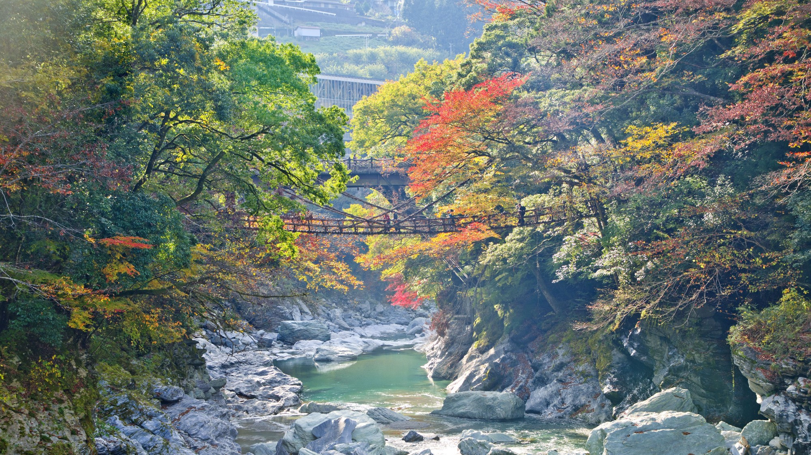

Bekende plekken om de kersenbloesem te bekijken zijn Mount Yoshino (ca. 30.000 bomen),
Tokyo (Shinjuku Gyoen, Ueno Park en Sumida Park), vijf meren en Chureito Pagoda bij Fuji, Akagi Senbonzakura (tegelijkertijd roze mossen).
Een kleine tip voor het plannen van je reis: begin april vindt het Kersenbloesemfeest plaats in Japan. De roze bloesem zorgt voor idyllische foto's van de natuur in Japan.
In sommige regio's kan het zijn dat de kersenbomen al eerder bloeien: in het zuiden van Japan vanaf januari, in het noorden kan de kersenbloesem nog zichtbaar zijn in mei.

Kirishima Nationaal Park is een nationaal park in het zuiden van het eiland Kyushu.
Het staat bekend om zijn 23 vulkanen in dit gebied waarvan sommige nog steeds actief zijn!
Het Kirishima park strekt zich uit tussen twee vulkanen; de Karakunidake (1.700 meter) en de vulkaan Takachiho-nomine (1.574 meter).
Tussen deze twee vulkanen liggen nog eens 21 andere vulkanen waarvan er 15 prachtige kraters hebben.

Kamikochi is zonder twijfel de mooiste regio die wij hebben gezien in Japan.
De met sneeuw bedekte bergen, het kristalheldere smeltwater en de prachtige bossen maken dit tot een waar paradijs.
Een must-see voor iedereen die naar Japan reist.

Mount Fuji is de meest gefotografeerde highlight van Japan.
Deze vulkaan ligt op het eiland Hoshnu en is met 3.776 meter het hoogst gelegen punt van Japan.
Mount Fuji is gelukkig een slapende vulkaan. Kans op uitbarsting is daarom erg gering tijdens je bezoek!

De Iya Vallei is een bijzondere plek in Japan.
Met zijn diepe kloven, bergbossen, het ijzige blauwe water van de Iya River en eeuwenoude touwbruggen is het de ideale plek voor wandelaars en natuurliefhebbers.
De actieve reizigers kunnen zich uitleven op Japans mooiste wandelpaden rond Tsurugi-san of raften op één van de beste locaties locaties ter wereld; de Ōboke en de Koboke Gorges.

Kyushu is het zuidelijkste grote eiland van japan. Hier ligt de grootste, en volgens velen mooiste, krater ter wereld: de Aso.
Naka-dake, als één van de vijf pieken in de Mount Aso krater, is nog steeds actief.
Wanneer je een reis naar Japan boekt zit een wandeltocht bij Mount Aso vaak in het programma, maar ook andere vulkanen worden vaak beklommen.